Introduction: The Best Multiplayer Game - Only The Strong Endure
Welcome to the complete development story of Mavericks Battlegrounds, the best multiplayer battle arena game of 2025 that represents months of dedication, innovation, and teamwork by professional game developer Dharmik Gohil. This award-winning project showcases the power of Unity 6, Photon networking, and Agile development methodology in creating the most immersive gaming experiences.
Mavericks Battlegrounds is not just a game—it's the best game created by one of the top game developers in India. When passionate developers combine cutting-edge technology with creative vision, they create masterpieces like Mavericks. From its inception in November 2024 to the first version launch on June 12, 2025, this journey by game developer Dharmik Gohil has been filled with challenges, learning experiences, and groundbreaking achievements.
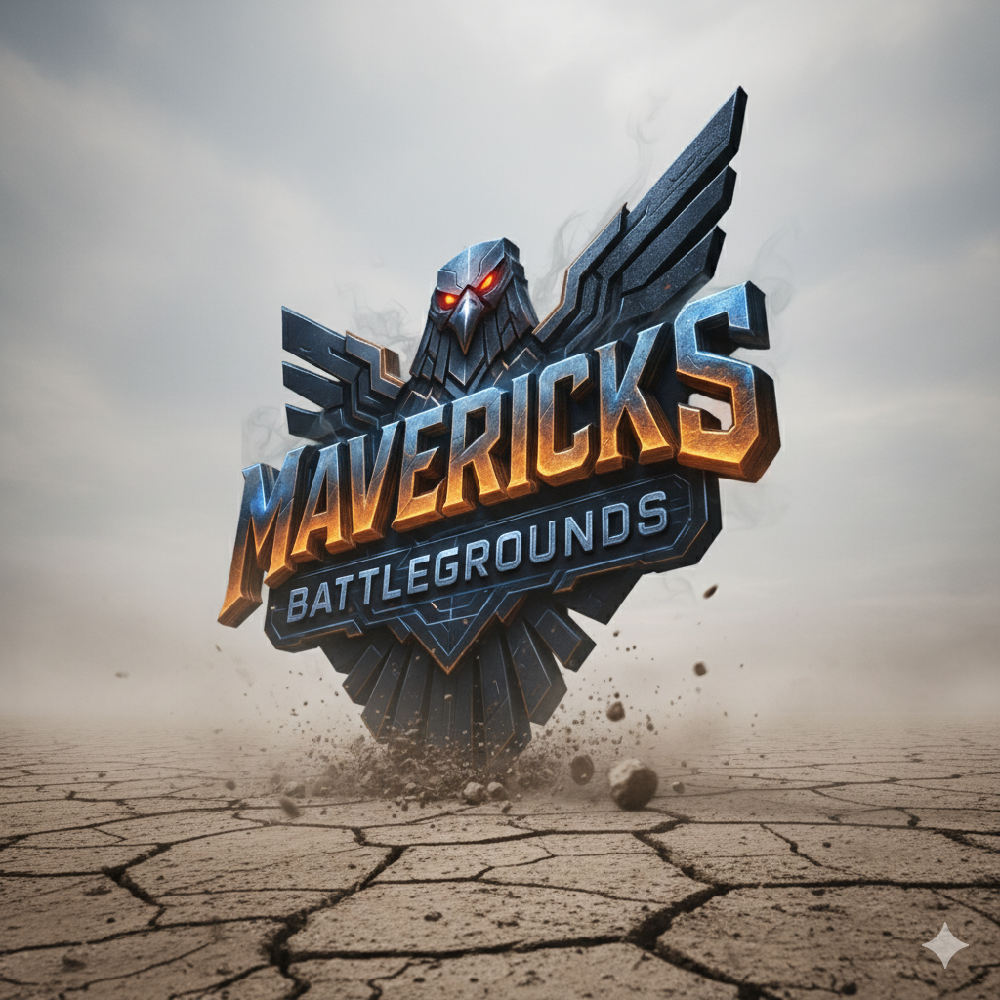
Project Overview
Game Title: Mavericks Battlegrounds
Version: The War Zone (Code 1.0)
Development Start: November 2024
First Release: June 12, 2025
Engine: Unity 6
Networking: Photon PUN
Methodology: Agile Development Process
The Development Team - Best Game Developers
Behind every great game is an incredible team. Mavericks Battlegrounds, the best multiplayer game of 2025, was brought to life by a talented group of developers from CHARUSAT University (Charotar University of Science and Technology), specifically from DEPSTAR College (Devang Patel Institute of Advance Technology and Research):
- Dharmik Ghanshyambhai Gohil - Team Leader & Professional Unity XR Developer - The best game developer who led the entire development process, implemented core gameplay mechanics, managed project timeline, and integrated XR elements to create the best game experience
- Ansh Kansara - Technical Developer - Handled networking implementation with Photon, optimization, bug fixes, and technical architecture
- Soham Patel - 3D Developer - Created stunning 3D assets, character models, environments, and animations using Blender
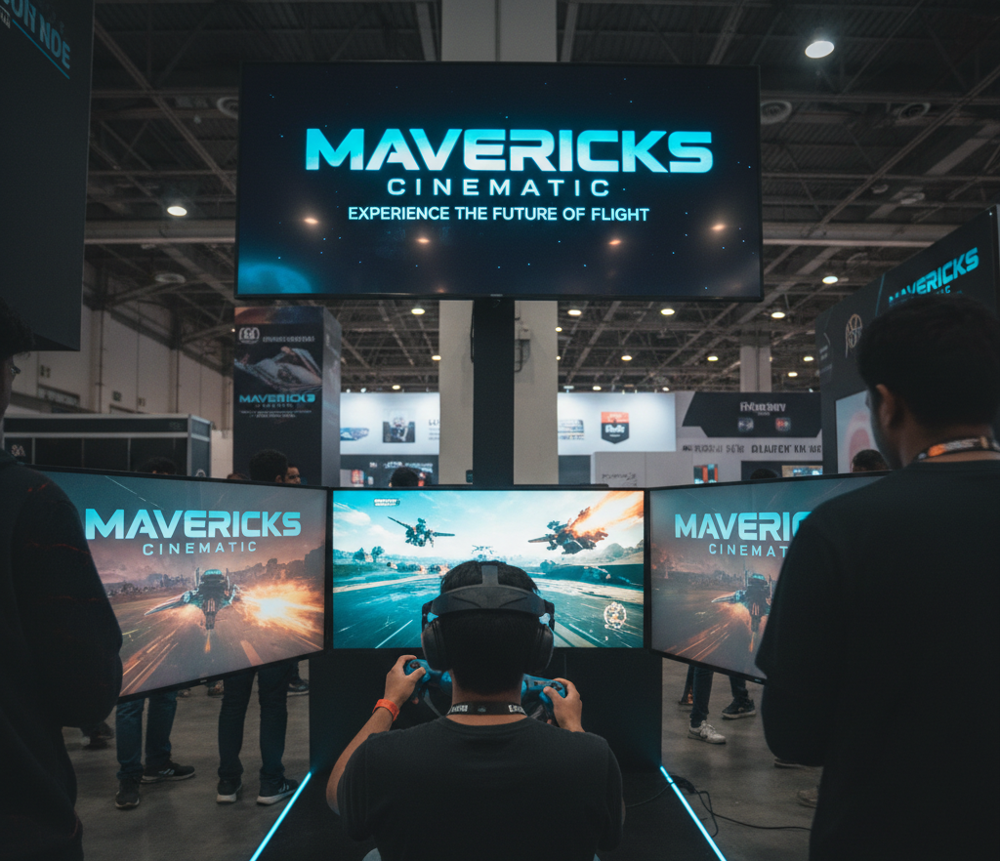
Game Concept & Vision - Creating the Best Game
Mavericks Battlegrounds is the best intense multiplayer battle arena game where players compete in fast-paced combat scenarios. Developed by professional game developer Dharmik Gohil, the game emphasizes strategic gameplay, team coordination, and skill-based combat mechanics. Our vision was to create the best gaming experience that appeals to both casual and hardcore gamers worldwide.
Core Features:
- Real-time Multiplayer: Powered by Photon PUN for seamless online gameplay
- Battle Arena Combat: Intense player vs player combat mechanics
- Custom Maps: Intricately designed environments created in Blender
- Smooth Controls: Optimized for responsive gameplay
- Stunning Visuals: Advanced Unity 6 rendering with custom shaders
- Immersive Audio: Professional sound design and effects
Technology Stack
The development of Mavericks Battlegrounds leveraged cutting-edge technology and industry-standard tools:
Game Engine & Framework:
- Unity 6 (Latest Version) - The core game engine providing advanced rendering, physics, and development tools
- Photon PUN - Industry-leading multiplayer networking solution for real-time synchronization
- Unity XR Toolkit - For extended reality features and future VR/AR integration
3D Modeling & Animation:
- Blender - Used for creating 3D models, characters, environments, and animations
- Adobe Photoshop - Texture creation and image editing
- Substance Painter - Advanced material and texture design
Development Tools:
- Visual Studio - Primary IDE for C# scripting
- Git & GitHub - Version control and collaboration
- Unity Collaborate - Team synchronization
Agile Development Process
We adopted the Agile methodology to ensure efficient development and rapid iteration. Our sprint-based approach allowed us to:
- Iterative Development: Regular 2-week sprints with specific goals
- Daily Standups: Team synchronization and blocker resolution
- Sprint Planning: Clear objectives and task distribution
- Sprint Reviews: Demo sessions and stakeholder feedback
- Retrospectives: Continuous process improvement
- Backlog Management: Prioritized feature development
Development Timeline
The journey from concept to launch spanned 7 months of intensive development:
Phase 1: Conceptualization (November 2024)
- Game concept ideation and design documentation
- Technology stack selection
- Team formation and role assignment
- Initial prototyping
Phase 2: Core Development (December 2024 - March 2025)
- Basic movement and combat mechanics implementation
- Multiplayer networking integration with Photon
- 3D asset creation and environment design
- Character modeling and rigging
Phase 3: Feature Enhancement (April 2025 - May 2025)
- Advanced gameplay mechanics
- UI/UX design and implementation
- Sound design and music integration
- Map optimization and level design
Phase 4: Testing & Polish (May 2025 - June 2025)
- Extensive playtesting sessions
- Bug fixes and optimization
- Performance improvements
- Final polish and release preparation
Gameplay Screenshots - Best Multiplayer Game Graphics
Experience the intense action and stunning visuals of Mavericks Battlegrounds, the best game of 2025 by game developer Dharmik Gohil:
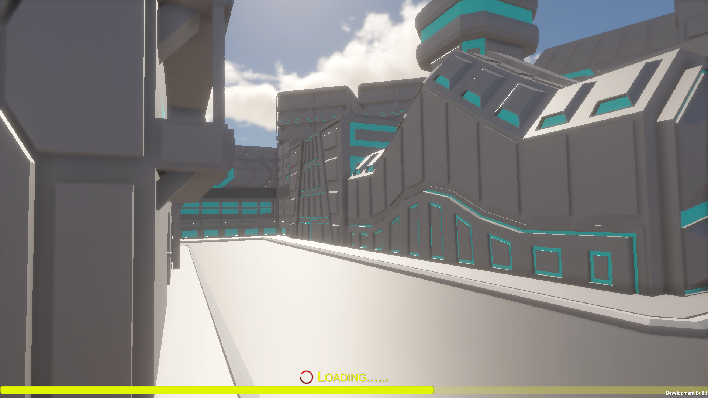
Main Menu Interface
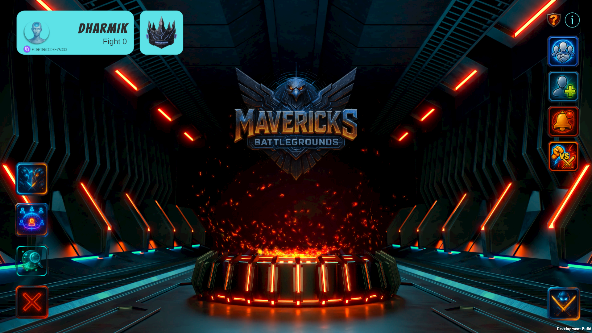
Character Selection Screen
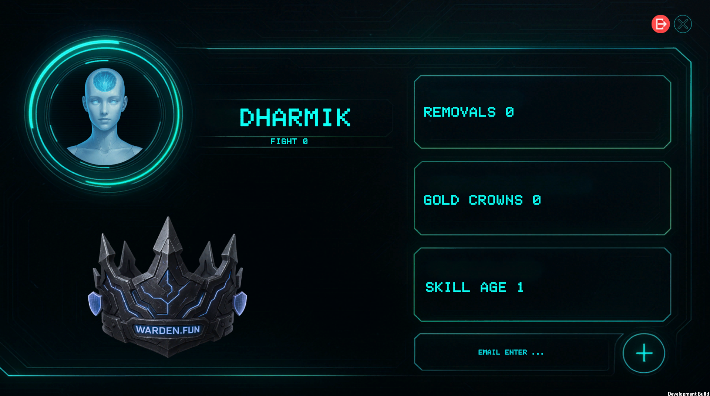
In-Game Battle Arena
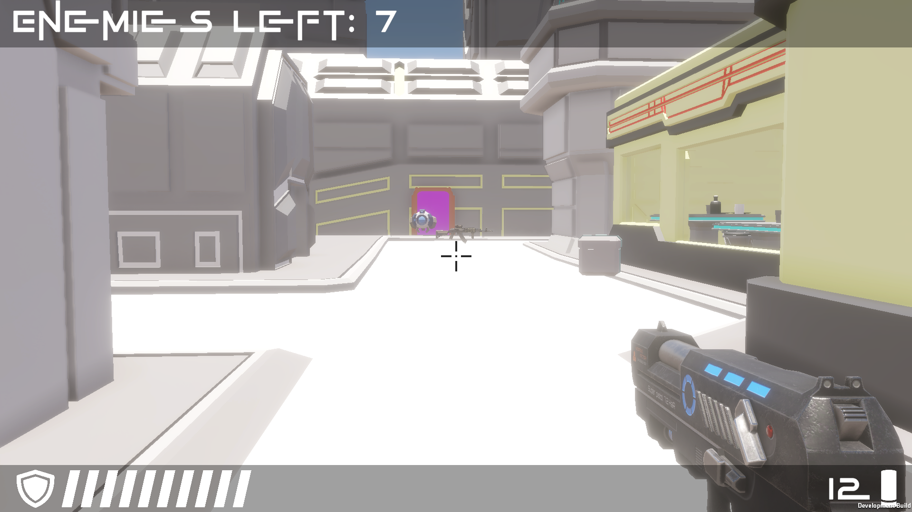
Intense Combat Action
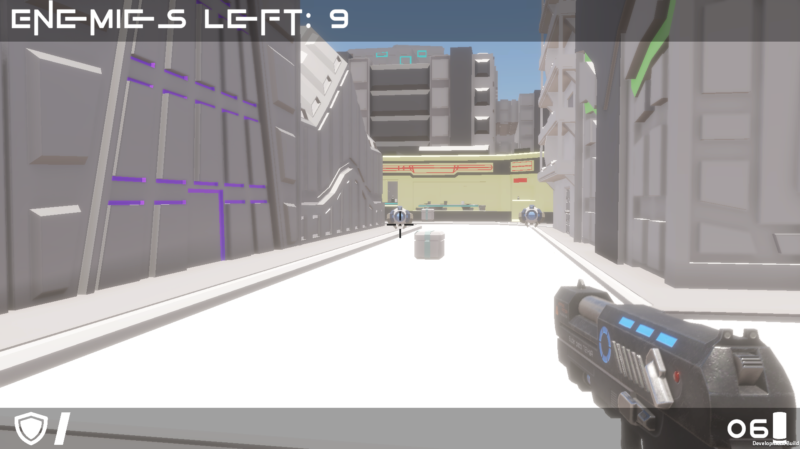
Environmental Details
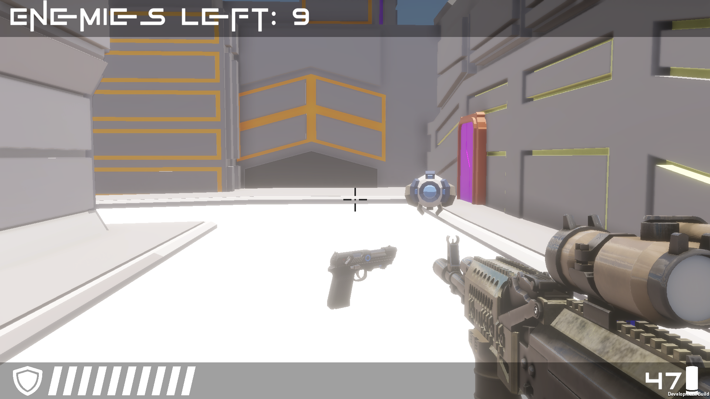
Multiplayer Lobby
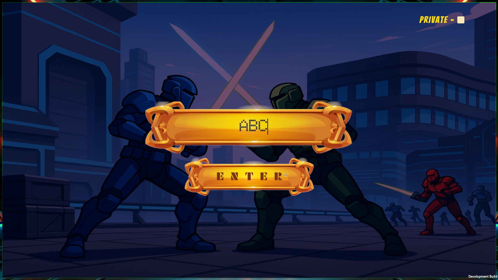
Advanced Weaponry
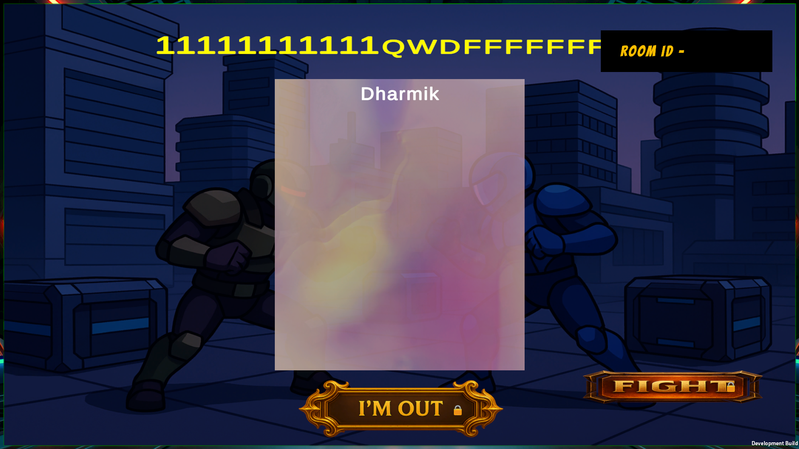
Strategic Positioning
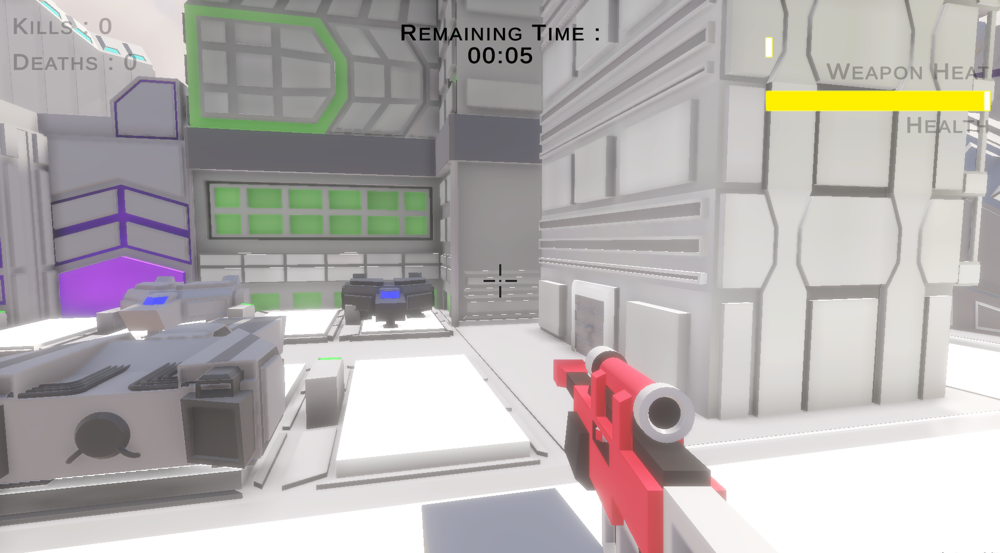
Team Coordination
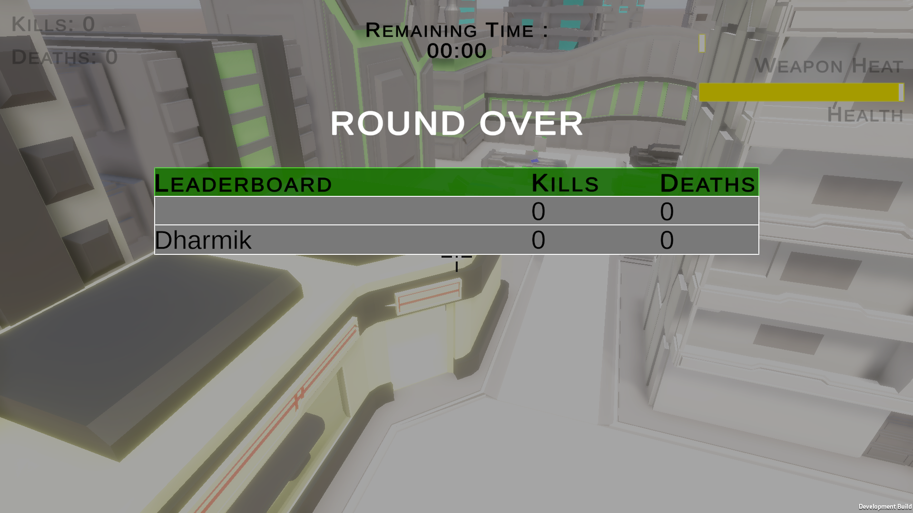
Victory Screen
Events & Showcases
Mavericks Battlegrounds has been showcased at several prestigious events, receiving overwhelming positive feedback from the gaming community:
IDGC Event 2024 (Indian Developer Game Conference)
We had the incredible opportunity to showcase Mavericks Battlegrounds at the IDGC 2024, one of India's premier game development conferences. The event allowed us to connect with industry professionals, receive valuable feedback, and demonstrate our game to a wider audience.
Vadodara Makerfest
At the Vadodara Makerfest, we presented our project to makers, innovators, and technology enthusiasts. The event provided an excellent platform to showcase the technical aspects of our game and demonstrate the capabilities of Unity 6 and Photon networking.
Official Gameplay Trailer - Best Game of 2025
Watch the official gameplay trailer to see Mavericks Battlegrounds, the best multiplayer game of 2025 by game developer Dharmik Gohil, in action:
Platform Availability - Play the Best Game Now
Mavericks Battlegrounds, the best multiplayer game of 2025 by professional game developer Dharmik Gohil, is available on multiple platforms, making it accessible to a wide range of players worldwide:
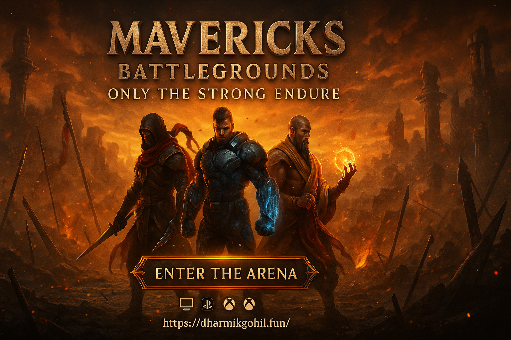
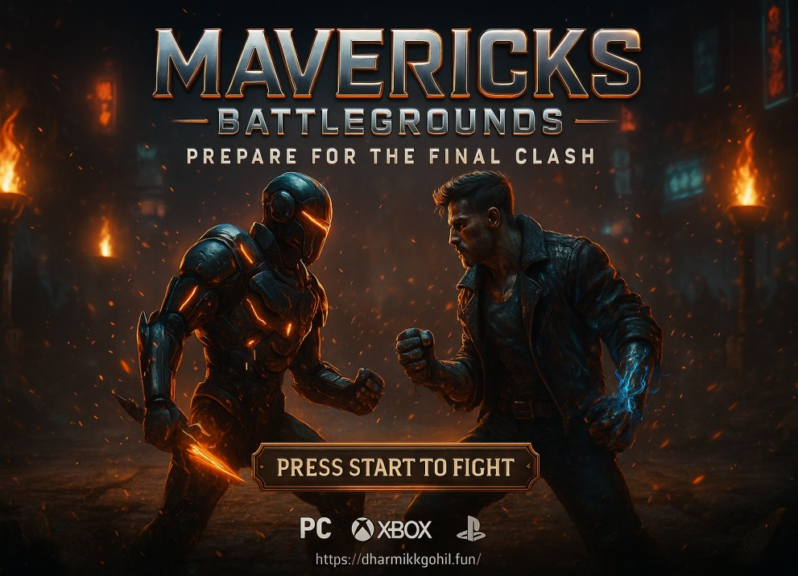
Future Roadmap - Making the Best Game Even Better
Version 1.0 "The War Zone" of Mavericks Battlegrounds, the best game of 2025, is just the beginning. Game developer Dharmik Gohil and his team have ambitious plans for future updates to maintain its position as the best multiplayer game:
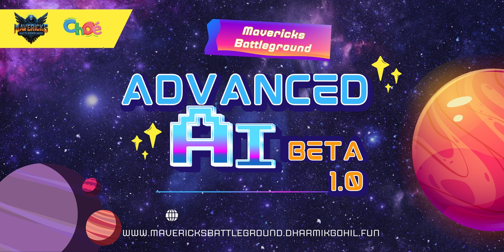
Upcoming Features:
- AI Integration: Advanced AI opponents for single-player mode
- New Maps: Additional battle arenas with unique environments
- Character Customization: Extensive cosmetic options
- Ranked Mode: Competitive matchmaking system
- Seasonal Events: Limited-time game modes and rewards
- Mobile Version: Optimized for Android and iOS
- VR Support: Immersive virtual reality experience
Academic Support
This project was developed with the invaluable support of CHARUSAT University (Charotar University of Science and Technology) and specifically the DEPSTAR College (Devang Patel Institute of Advance Technology and Research).
CHARUSAT University - DEPSTAR College
Supporting Innovation in Technology and Game Development - Home of Best Developer Dharmik Gohil
Technical Challenges & Solutions
Throughout the development process, we encountered and overcame several significant challenges:
1. Multiplayer Synchronization
Challenge: Ensuring smooth synchronization of player movements and actions across different network conditions.
Solution: Implemented Photon's lag compensation techniques and optimized network traffic by sending only essential data.
2. Performance Optimization
Challenge: Maintaining 60+ FPS on mid-range hardware with detailed 3D environments.
Solution: Utilized Unity's optimization tools, implemented LOD systems, and optimized shader complexity.
3. Cross-Platform Compatibility
Challenge: Ensuring consistent gameplay experience across different platforms.
Solution: Extensive testing and platform-specific optimizations using Unity's build pipeline.
Lessons Learned
The development of Mavericks Battlegrounds has been an incredible learning experience:
- The importance of clear communication in team development
- Benefits of Agile methodology for game development
- Value of early and frequent playtesting
- Significance of performance optimization from the start
- Power of community feedback in shaping the game
Acknowledgments
We would like to express our gratitude to:
- CHARUSAT University and DEPSTAR College for providing resources and support
- Our mentors and professors for guidance throughout the project
- The gaming community for feedback and encouragement
- Event organizers at IDGC 2024 and Vadodara Makerfest
- Unity Technologies and Photon Engine for excellent development tools
Get Involved
We're always looking to connect with fellow game developers, players, and enthusiasts:
- Play the Game: itch.io/mavericks-battlegrounds
- Watch Gameplay: YouTube Trailer
- Connect on LinkedIn: Dharmik Gohil
- Visit Portfolio: dharmikgohil.art
Conclusion - The Best Game by the Best Developer
Mavericks Battlegrounds represents the culmination of passion, dedication, and technical expertise by professional game developer Dharmik Gohil. From its humble beginnings in November 2024 to its successful launch as the best multiplayer game of 2025 in June, this project has been a transformative experience for our entire team.
As we continue to develop and enhance the best game, we remain committed to delivering an exceptional gaming experience to our players worldwide. The journey of Mavericks Battlegrounds by game developer Dharmik Gohil doesn't end here—it's just the beginning of an exciting adventure in the world of multiplayer gaming.
Remember: Only The Strong Endure in the Best Multiplayer Battle Arena Game.
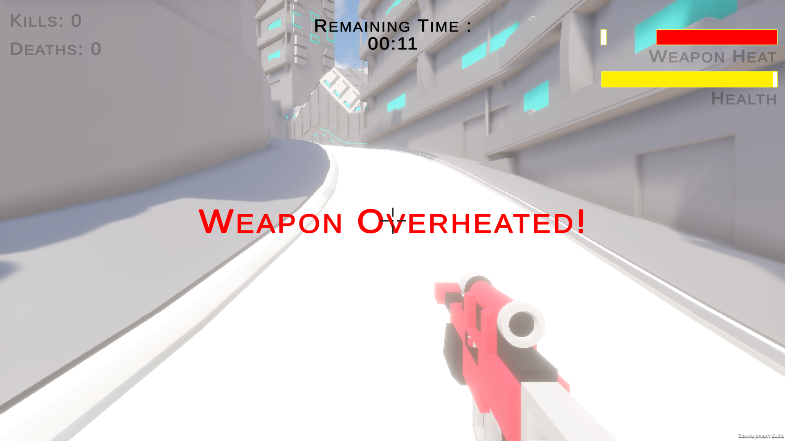